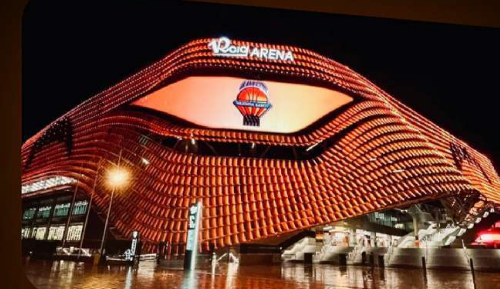
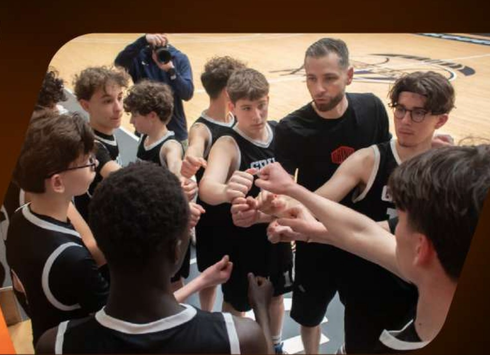
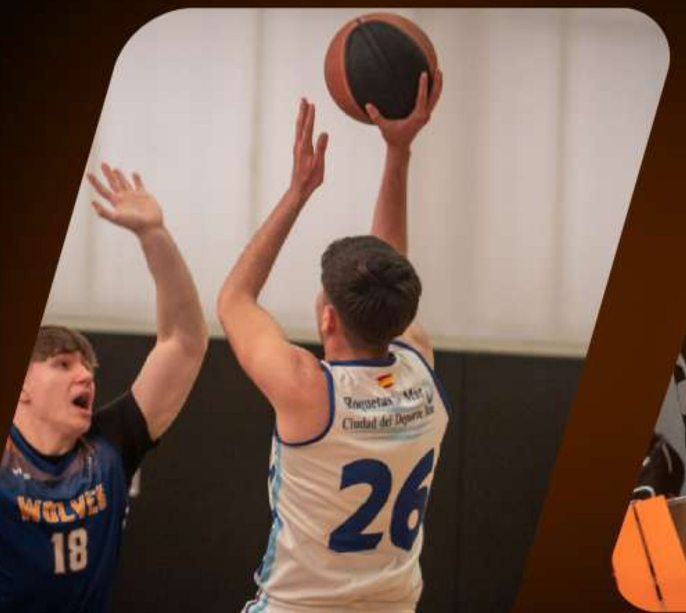
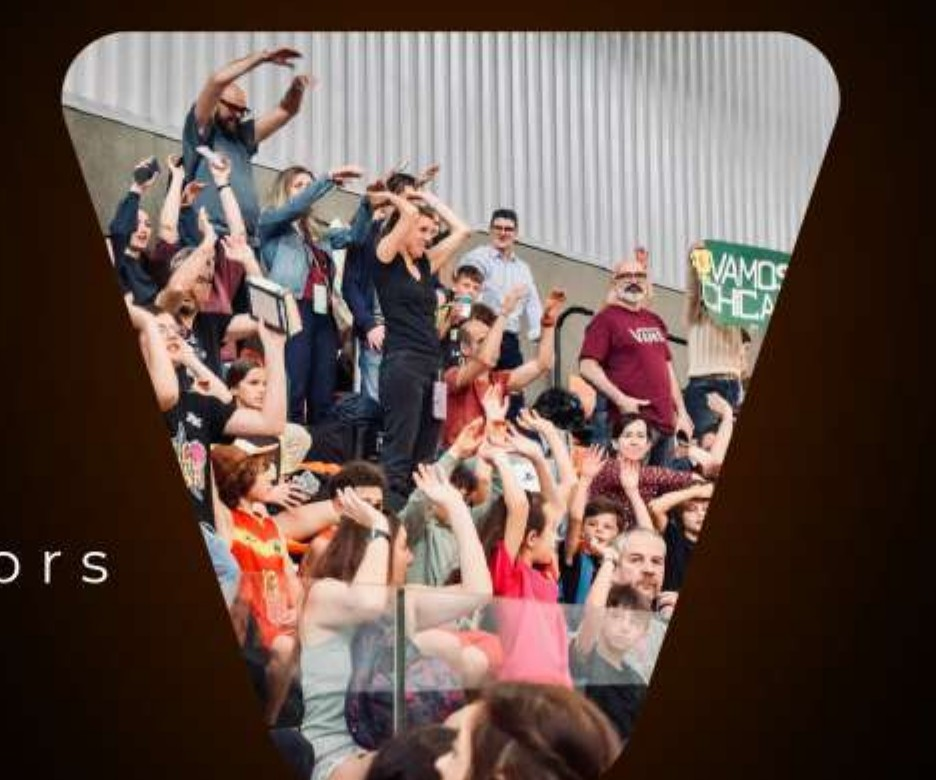

Ver también
El baloncesto es el deporte donde más experiencia hemos acumulado. Organizamos tres torneos internacionales al año en Valencia, con partido de exhibición profesional en el Roig Arena, sede de Valencia Basket, y pista central en Fuente de San Luis con capacidad para 8.000 espectadores.
Equipos de todo el mundo compiten, conviven y viven el baloncesto en estado puro: ceremonias de apertura y clausura, descuentos de grupo para Euroliga, ACB y Liga Femenina, y experiencias en la ciudad de Valencia.




Tres fechas al año para que elijas la que mejor encaje con tu equipo.